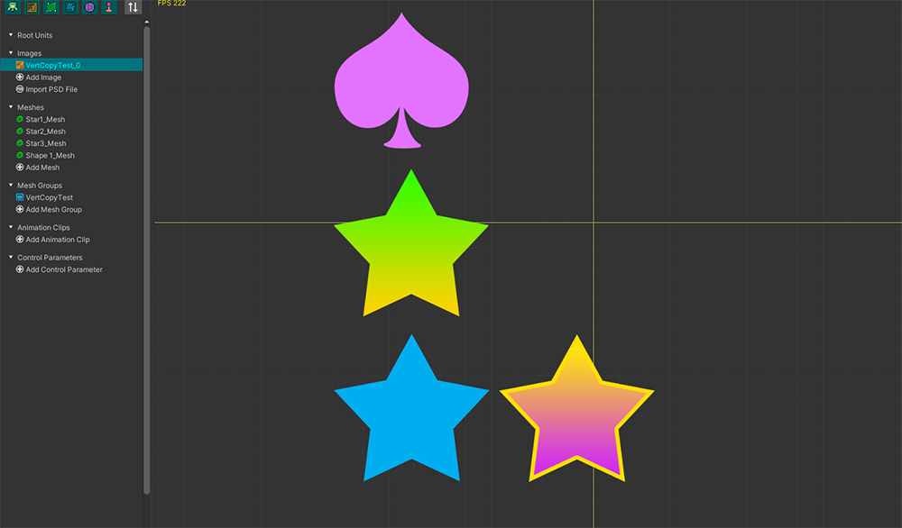

AnyPortrait > Manual > Copying Vertices
Copying Vertices
1.4.2
When there are two or more similar images in the Image Atlas, you can reduce repetitive work by copying the mesh vertices.
This page will show you how to copy and paste vertices of a mesh to the same mesh or to another mesh.

This is an image that needs to create meshes of a similar shape.
Creating a single mesh and copying it may save you a lot of work.

(1) Select a mesh.
(2) Select the Make Mesh tab.
(3) Select the Edit tool.
(4) Select the vertices you want to copy.
(5) Press the Copy button to copy vertices.

(1) Select another mesh to paste the copied vertices into.
(2) Select the Make Mesh tab.
(3) Select the Edit tool.
(4) Press the Paste button.
(5) A dialog asking how to paste appears.
Let's press the Paste button with the default "Source Value As Is" option selected.

You can see the vertices being copied as above.
But since the vertices have been copied to the location corresponding to the image of the existing mesh, we need to move these vertices.
If each mesh's Pivot is properly set, the vertices can be pasted to a more precise location.

Go back to the step before pasting the vertices.
(1) Press the Paste button again.
(2) This time, change the Position option value to Relative To Pivot and press the Paste button.

Vertices are copied with their positions transformed based on the relative coordinates of the Pivot.
If the mesh's Pivot is properly set, you'll see the vertices copied to the proper location, as shown above.